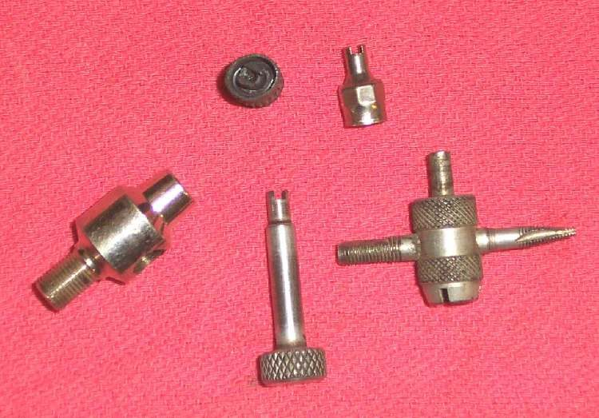
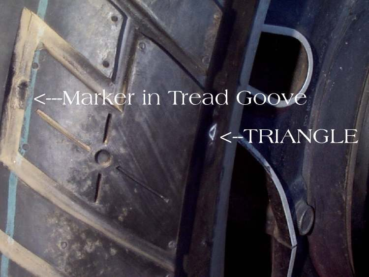
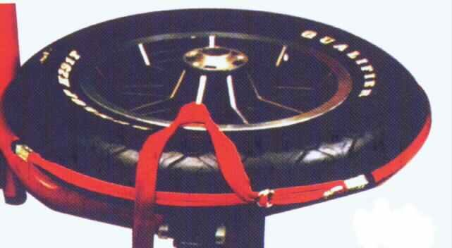

The tyre is flat or going down fast, and the wheel is tubeless (cast alloy wheels, and some spoked wheels; the tyre says TUBELESS or TL). Tubeless tyres usually lose air slowly around a nail, which gives you time to stop safely. Some small holes can be plugged as a temporary fix; many cannot.
Is it safe to ride?
No, not on a flat tyre. Riding flat damages the inside of the tyre and can bend the rim; a flat front can cause a crash. Stop safely. Ride only after a successful temporary plug, gently, to a tyre shop.
Quick checks first
- Stop off the road on firm ground; bike on its stand.
- Find the object: look round the tread, or spray soapy water. Do not pull it out yet.
- Note where it is: tread centre, shoulder or sidewall.
- Was the tyre ridden flat for any distance?
Diagnose it step by step
1Is there an object or hole in the tread?
- Yes: go to step 2.
- No: go to step 5.
2Is the hole in the central part of the tread (not the shoulder or sidewall) and small (nail sized)?
- Yes: go to step 3.
- No: do not plug it. The tyre needs a shop and probably replacing (Replace a tyre). Arrange transport.
3Was the tyre ridden flat or nearly flat?
- Yes: the inside may be damaged where you cannot see it. Do not plug and ride. Have a shop remove and inspect the tyre.
- No: go to step 4.
4Do you have a tubeless plug kit and a way to inflate?
- Yes: Plug a tubeless tyre puncture. Then ride gently, no passenger, to a tyre shop for a plug-patch from inside or a new tyre.
- No: do not fit an inner tube into a tubeless tyre as a fix. Arrange transport or a mobile repairer.
5No object found. Spray soapy water on the valve and along both rims. Where are the bubbles?
- At the valve: Air leaking from the tyre valve.
- Where tyre meets rim: Air leaking where the tyre meets the rim.
- From a crack in the rim: Rim is dented or cracked. Do not ride.
- From a cut or crack in the sidewall: Replace a tyre.
6After any repair, does the tyre hold pressure overnight?
- Yes: keep checking for a few days (Check tyre pressure).
- No: go to Tyre slowly loses air.
Causes, most likely first
| Cause | How to confirm | Fix |
|---|---|---|
| Nail, screw or thorn in the tread | Object visible, bubbles | Plug, then shop repair or new tyre |
| Valve leak | Bubbles at valve | Check and replace a tyre valve |
| Bead not sealing | Bubbles at rim line | Bead leak |
| Cut, sidewall or shoulder damage | Damage outside tread centre | Replace a tyre |
| Cracked rim after a pothole | Crack, bubbles from rim | Rim damage |